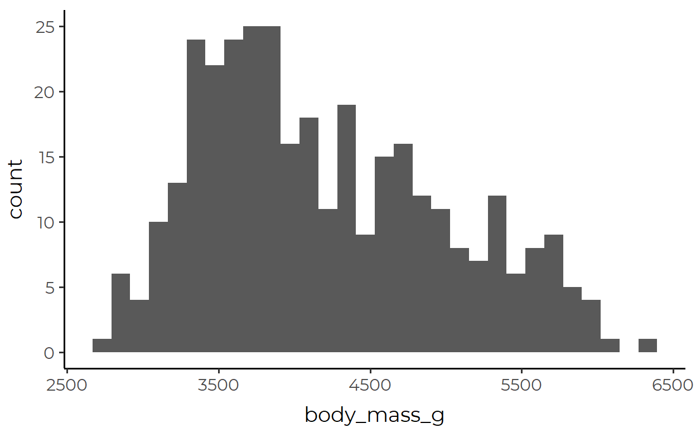
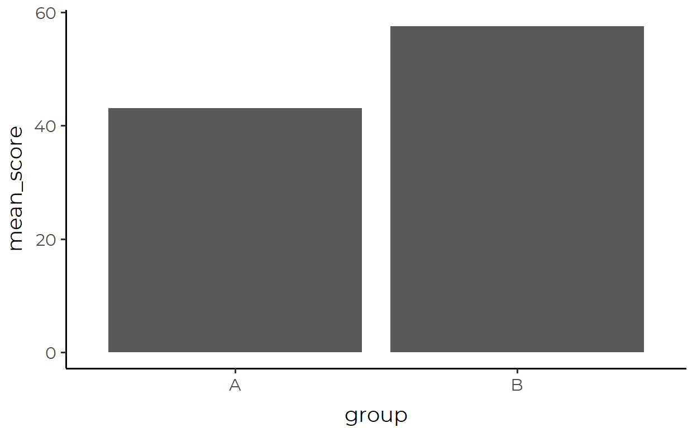
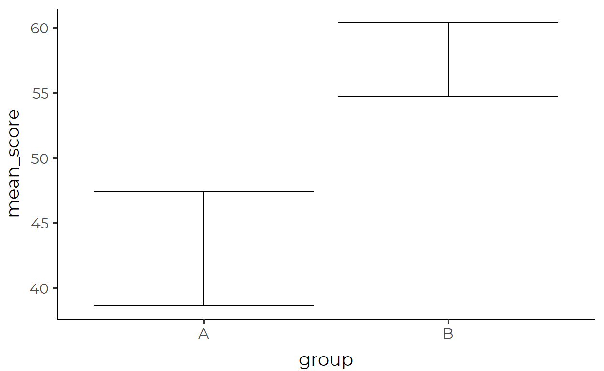
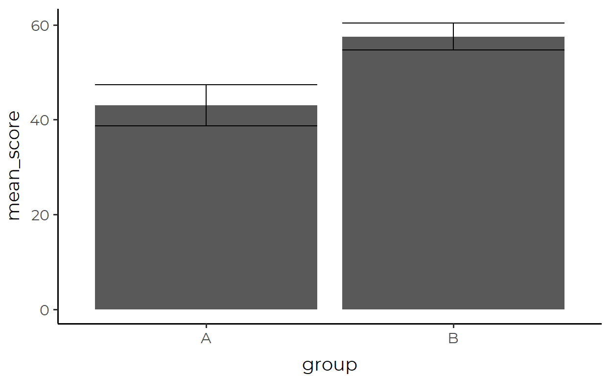
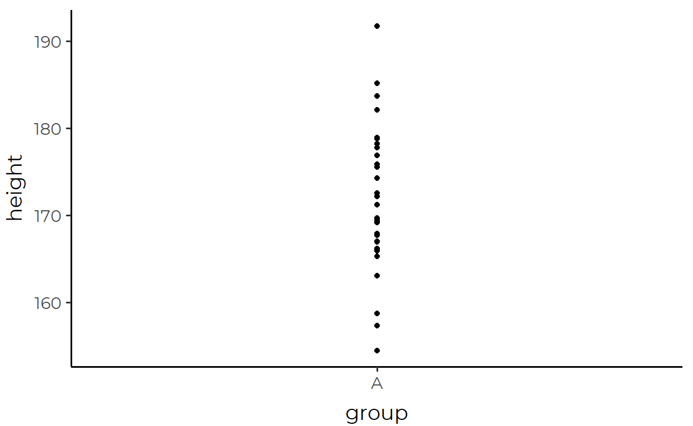
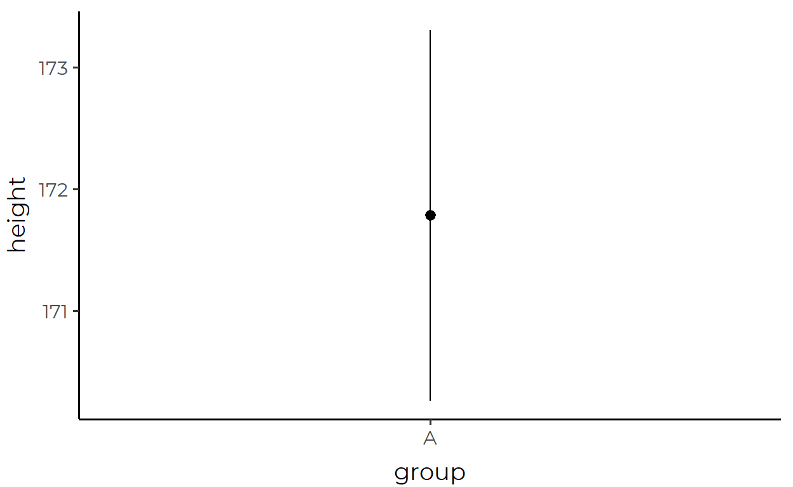
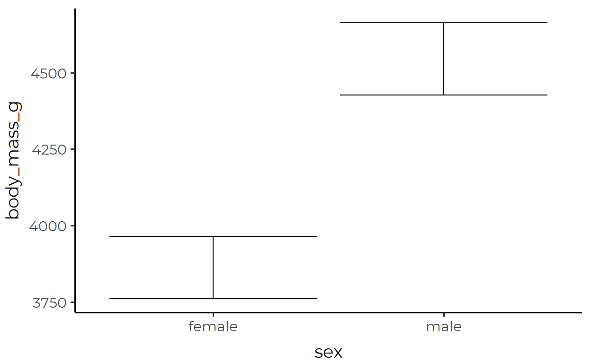
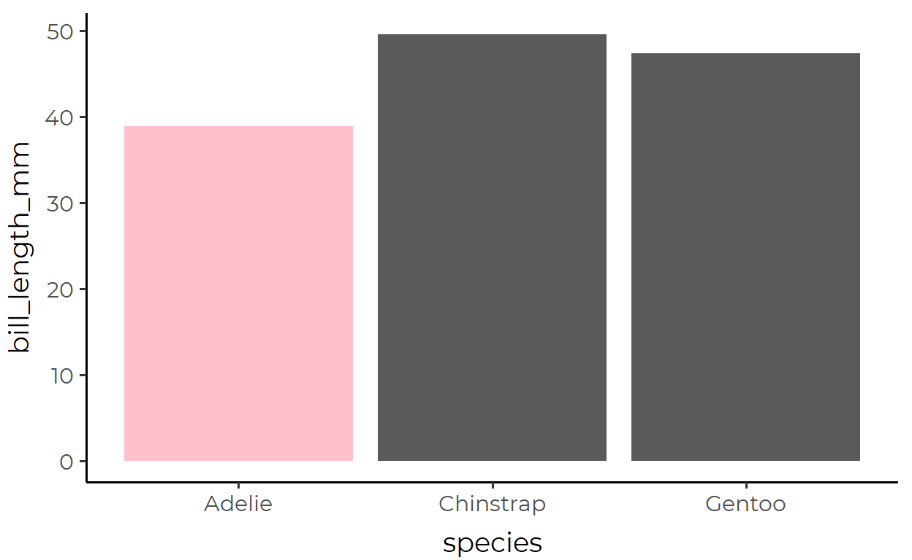
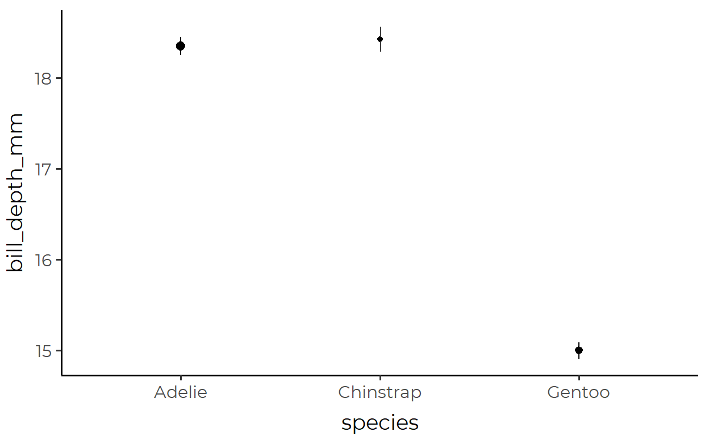

UPDATE 10/5/20: This blog post was featured in the rweekly highlights podcast! Thanks to the rweekly team for a flattering review of my tutorial!
Introduction
(Feel free to skip the intro section if you want to get to the point!)
A powerful concept in the Grammar of Graphics is that variables are mapped onto aesthetics. In {ggplot2}, a class of objects called geom implements this idea. For example, geom_point(mapping = aes(x = mass, y = height)) would give you a plot of points (i.e. a scatter plot), where the x-axis represents the mass variable and the y axis represents the height variable.
Because geom_*()s1 are so powerful and because aesthetic mappings are easily understandable at an abstract level, you rarely have to think about what happens to the data you feed it. Take this simple histogram for example:
data("penguins", package = "palmerpenguins")
ggplot(data = penguins, mapping = aes(x = body_mass_g)) +
geom_histogram()

What’s going on here? You might say that the body_mass_g variable is represented in the x-axis. Sure, that’s not wrong. But a fuller explanation would require you to talk about these extra steps under the hood:
The variable mapped to x is divided into discrete bins
A count of observations within each bin is calculated
That new variable is then represented in the y axis
Finally, the provided x variable and the internally calculated y variable is represented by bars that have certain position and height
I don’t mean to say here that you are a total fool if you can’t give a paragraph-long explanation of geom_histogram(). Rather, my intention here is to emphasize that the data-to-aesthetic mapping in GEOM objects is not neutral, although it can often feel very natural, intuitive, and objective (and you should thank the devs for that!). Just think about the many ways in which you can change any of the internal steps above, especially steps 12 and 23, while still having the output look like a histogram.
This important point rarely crosses our mind, in part because of what we have gotten drilled into our heads when we first started learning ggplot. As beginners we’ve likely experienced the frustration of having all the data we need to plot something, but ggplot just won’t work. You could imagine a beginner today who’s getting frustrated because geom_point(aes(x = mass, y = height)) throws an error with the following data.
# A tibble: 2 x 4
variable subject1 subject2 subject3
<chr> <dbl> <dbl> <dbl>
1 mass 75 70 55
2 height 154 172 144And what would StackOverflow you tell this beginner? You’d probably tell them to put the data in a tidy format4 first.
# A tibble: 3 x 3
subject mass height
<dbl> <dbl> <dbl>
1 1 75 154
2 2 70 172
3 3 55 144Now, that’s something you can tell a beginner for a quick and easy fix. But if you still simply think “the thing that makes ggplot work = tidy data”, it’s important that you unlearn this mantra in order to fully understand the motivation behind stat.
When and why should I use STAT?
You could be using ggplot every day and never even touch any of the two-dozen native stat_*() functions. In fact, because you’ve only used geom_*()s, you may find stat_*()s to be the esoteric and mysterious remnants of the past that only the developers continue to use to maintain law and order in the depths of source code hell.
If that describes you, you might wonder why you even need to know about all these stat_*() functions.

Well, the main motivation for stat is simply this:
“Even though the data is tidy it may not represent the values you want to display”5
The histogram discussion in the previous section was a good example to this point, but here I’ll introduce another example that I think will hit the point home.
Suppose you have a data simple_data that looks like this:
And suppose that you want to draw a bar plot where each bar represents group and the height of the bars corresponds to the mean of score for each group.
If you’re stuck in the mindset of “the data that I feed in to ggplot() is exactly what gets mapped, so I need to tidy it first and make sure it contains all the aesthetics that each geom needs”, you would need to transform the data before piping it in like this:
simple_data %>%
group_by(group) %>%
summarize(
mean_score = mean(score),
.groups = 'drop' # Remember to ungroup!
) %>%
ggplot(aes(x = group, y = mean_score)) +
geom_col()

Where the data passed in looks like this:
# A tibble: 2 x 2
group mean_score
<fct> <dbl>
1 A 43.0
2 B 57.5Ok, not really a problem there. But what if we want to add in error bars too? Error bars also plot a summary statistic (the standard error), so we’d need make another summary of the data to pipe into ggplot().
Let’s first plot the error bar by itself, we’re again passing in a transformed data
simple_data %>%
group_by(group) %>%
summarize(
mean_score = mean(score),
se = sqrt(var(score)/length(score)),
.groups = 'drop'
) %>%
mutate(
lower = mean_score - se,
upper = mean_score + se
) %>%
ggplot(aes(x = group, y = mean_score, ymin = lower, ymax = upper)) +
geom_errorbar()

Where the transformed data looks like this:
# A tibble: 2 x 5
group mean_score se lower upper
<fct> <dbl> <dbl> <dbl> <dbl>
1 A 43.0 4.37 38.7 47.4
2 B 57.5 2.82 54.7 60.4Ok, now let’s try combining the two. One way to do this is to save the data paseed in for the bar plot and the data passed in for the errorbar plot as two separate variables, and then call each in their respective geoms:
simple_data_bar <- simple_data %>%
group_by(group) %>%
summarize(
mean_score = mean(score),
.groups = 'drop'
)
simple_data_errorbar <- simple_data %>%
group_by(group) %>%
summarize(
mean_score = mean(score),
se = sqrt(var(score)/length(score)),
.groups = 'drop'
) %>%
mutate(
lower = mean_score - se,
upper = mean_score + se
)
ggplot() +
geom_col(
aes(x = group, y = mean_score),
data = simple_data_bar
) +
geom_errorbar(
aes(x = group, y = mean_score, ymin = lower, ymax = upper),
data = simple_data_errorbar
)


Yeah… that code is a mouthful. The above approach is not parsimonious because we keep repeating similar processes in different places.6 If you, like myself, don’t like how this looks, then let this be a lesson that this is the consequence of thinking that you must always prepare a tidy data containing values that can be DIRECTLY mapped to geometric objects.
And on a more theoretical note, simple_data_bar and simple_data_errorbar aren’t even really “tidy” in the original sense of the term. We need to remind ourselves here that tidy data is about the organization of observations in the data. Under this definition, values like bar height and the top and bottom of whiskers are hardly observations themselves. Rather, they’re abstractions or summaries of the actual observations in our data simple_data which, if you notice, we didn’t even use to make our final plot above!

Figure 1: Tidy data is about the organization of observations.
So not only is it inefficient to create a transformed dataframe that suits the needs of each geom, this method isn’t even championing the principles of tidy data like we thought.7
What we should do instead is to take advantage of the fact that our original data simple_data is the common denominator of simple_data_bar and simple_data_errorbar!
Wouldn’t it be nice if you could just pass in the original data containing all observations (simple_data) and have each layer internally transform the data in appropriate ways to suit the needs of the geom for that layer?
Oh, so you mean something like this?
simple_data %>%
ggplot(aes(group, score)) +
stat_summary(geom = "bar") +
stat_summary(geom = "errorbar")

Interim Summary #1
In this section, I built up a tedious walkthrough of making a barplot with error bars using only geom_*()s just to show that two lines of stat_summary() with a single argument can achieve the same without even touching the data through any form of pre-processing.
So that was a taste of how powerful stat_*()s can be, but how do they work and how can you use them in practice?
Understanding STAT with stat_summary()
Let’s analyze stat_summary() as a case study to understand how stat_*()s work more generally. I think that stat_summary() is a good choice because it’s a more primitive version of many other stat_*()s and is likely to be the one that you’d end up using the most for visualizations in data science.
Before we start, let’s create a toy data to work with. Let’s call this data height_df because it contains data about a group and the height of individuals in that group.
height_df <- tibble(group = "A",
height = rnorm(30, 170, 10))
We can visualize the data with a familiar geom, say geom_point():
height_df %>%
ggplot(aes(x = group, y = height)) +
geom_point()

As a first step in our investigation, let’s just replace our familiar geom_point() with the scary-looking stat_summary() and see what happens:
height_df %>%
ggplot(aes(x = group, y = height)) +
stat_summary()

Instead of points, we now see a point and a line through that point. And before you get confused, this is actually one geom, called pointrange, not two separate geoms.8 Now that that’s cleared up, we might ask: what data is being represented by the pointrange?
Answering this question requires us to zoom out a little bit and ask: what variables does pointrange map as a geom? By looking at the documentation with ?geom_pointrange we can see that geom_pointrange() requires the following aesthetics:
x or y
ymin or xmin
ymax or xmax
So now let’s look back at our arguments in aes(). We said that group is mapped to x and that height is mapped to y. But we never said anything about ymin/xmin or ymax/xmax anywhere. So how is stat_summary() drawing a pointrange if we didn’t give it the required aesthetic mappings?
Well, a good guess is that stat_summary() is transforming the data to calculate the necessary values to be mapped to pointrange. Here’s one reason for that guess - I’ve been suppressing message throughout this post but if you run the above code with stat_summary() yourself, you’d actually get this message:
No summary function supplied, defaulting to `mean_se()`Huh, a summary function? That sounds promising. Maybe that’s the key to our mystery!
First, we see from the documentation of stat_summary() that this mean_se() thing is the default value for the fun.data argument (we’ll talk more on this later).
Next, let’s call it in the console to see what it is:
mean_se
function (x, mult = 1)
{
x <- stats::na.omit(x)
se <- mult * sqrt(stats::var(x)/length(x))
mean <- mean(x)
new_data_frame(list(y = mean, ymin = mean - se, ymax = mean +
se), n = 1)
}
<bytecode: 0x0000000019292b88>
<environment: namespace:ggplot2>Ok, so it’s a function that takes some argument x and a second argument mult with the default value 1.
Let’s go over what it does by breaking down the function body line by line:
- Remove
NAvalues - Calculate variable
sewhich is the standard error of the values inxusing the equation \(SE = \sqrt{\frac{1}{N}\sum_{i=1}^N(x_i-\bar{x})^2}\) - Calculate the variable
mean9 which is the mean ofx - Create a new dataframe with one row, with columns
y,ymin, andymax, whereyis the mean ofx,yminis one standard error below the mean, andymaxis one standard error above the mean.10
A cool thing about this is that although mean_se() seems to be exclusively used for internal operations, it’s actually available in the global environment from loading {ggplot2}. So let’s pass height_df to mean_se() and see what we get back!
mean_se(height_df)
Error: Elements must equal the number of rows or 1
Uhhh what?
Do you see what happened just now? This is actually really important: stat_summary() summarizes one dimension of the data.11 mean_se() threw an error when we passed it our whole data because it was expecting just a vector of the variable to be summarized.
Ok now that we’ve went over that little mishap, let’s give mean_se() the vector it wants.
mean_se(height_df$height)
y ymin ymax
1 171.8 170.3 173.3And look at that, these look like they’re the same values that were being represented by the mid-point and the end-points of the pointrange plot that we drew with stat_summary() above!
You know how else we can check that this is the case? With this neat function called layer_data().
We can pull the data that was used to draw the pointrange by passing our plot object to layer_data() and setting the second argument to 112:
pointrange_plot <- height_df %>%
ggplot(aes(x = group, y = height)) +
stat_summary()
layer_data(pointrange_plot, 1)
x group y ymin ymax PANEL flipped_aes colour size linetype shape fill
1 1 1 171.8 170.3 173.3 1 FALSE black 0.5 1 19 NA
alpha stroke
1 NA 1Would ya look at that! There’s a lot of stuff in there, but it looks like the values for y, ymin, and ymax used for the actual plot match up with the values we calculated with mean_se() above!
We’ve solved our mystery of how the pointrange was drawn when we didn’t provide all the required mappings!

Interim Summary #2
To summarize this section (ha!), stat_summary() works in the following order:
The data that is passed into
ggplot()is inherited if one is not providedThe function passed into the
fun.dataargument applies transformations to (a part of) that data (defaults tomean_se())The result is passed into the geom provided in the
geomargument (defaults to pointrange).If the data contains all the required mapppings for the geom, the geom will be plotted.
And to make things extra clear & to make stat_summary() less mysterious, we can explicitly spell out the two arguments fun.data and geom that we went over in this section.
height_df %>%
ggplot(aes(x = group, y = height)) +
stat_summary(
geom = "pointrange",
fun.data = mean_se
)
Look, it’s the same plot!
Putting STAT to use
Now we have arrived at the fun part.
Here, I will demonstrate a few ways of modifying stat_summary() to suit particular visualization needs.
For this section, I will use a modified version of the penguins data that I loaded all the way up in the intro section (I’m just removing NA values here, nothing fancy).
my_penguins <- na.omit(penguins)
At no point in this section will I be modifying the data being piped into ggplot(). That is the beauty and power of stat.
1. Error bars showing 95% confidence interval
Here, we’re plotting the mean body_mass_g of penguins for each sex, with error bars that show the 95% confidence interval (a range of approx 1.96 standard errors from the mean).
my_penguins %>%
ggplot(aes(sex, body_mass_g)) +
stat_summary(
fun.data = ~mean_se(., mult = 1.96), # Increase `mult` value for bigger interval!
geom = "errorbar",
)

The transformed data used for the errorbar geom inside stat_summary():
bind_rows(
mean_se(my_penguins$body_mass_g[my_penguins$sex == "female"], mult = 1.96),
mean_se(my_penguins$body_mass_g[my_penguins$sex == "male"], mult = 1.96),
)
y ymin ymax
1 3862 3761 3964
2 4546 4427 46652. A color-coded bar plot of medians
Here, we’re plotting the median bill_length_mm for each penguins species and coloring the groups with median bill_length_mm under 40 in pink.

The transformed data used for the bar geom inside stat_summary():
group_split(my_penguins, species) %>%
map(~ pull(., bill_length_mm)) %>%
map_dfr(calc_median_and_color)
# A tibble: 3 x 2
y fill
<dbl> <chr>
1 38.8 pink
2 49.6 grey35
3 47.4 grey35Note how you can calculate non-required aesthetics in your custom functions (e.g., fill) and they also be used to make the geom!
3. Pointrange plot with changing size
Here, we’re plotting bill_depth_mm of penguins inhabiting different islands, with the size of each pointrange changing with the number of observations

The transformed data used for the pointrange geom inside stat_summary():
group_split(my_penguins, species) %>%
map(~ pull(., bill_depth_mm)) %>%
map_dfr(
function(x) {
scaled_size <- length(x)/nrow(my_penguins)
mean_se(x) %>%
mutate(size = scaled_size)
}
)
y ymin ymax size
1 18.35 18.25 18.45 0.4384
2 18.42 18.28 18.56 0.2042
3 15.00 14.91 15.09 0.3574Conclusion
Main Ideas
Even though the data is tidy, it may not represent the values you want to display
The solution is not to transform your already-tidy data so that it contains those values
Instead, you should pass in your original tidy data into
ggplot()as is and allowstat_*()functions to apply transformations internallyThese
stat_*()functions can be customized for both their geoms and their transformation functions, and works similarly togeom_*()functions in other regardsIf you want to use your own custom function, make sure to check the documentation of that particular
stat_*()function to check the variable/data type it requires.If you want to use a different geom, make sure that your transformation function calculates all the required aesthetics for that geom
STAT vs. GEOM or STAT and GEOM?
Although I have talked about the limitations of geom_*()s to demonstrate the usefulness of stat_*()s, both have their place. It’s about knowing when to use which; it’s not a question of either-or. In fact, they require each other - just like how stat_summary() had a geom argument, geom_*()s also have a stat argument. At a higher level, stat_*()s and geom_*()s are simply convenient instantiations of the layer() function that builds up the layers of ggplot.
Because this is important, I’ll wrap up this post with a quote from Hadley explaining this false dichotomy:
Unfortunately, due to an early design mistake I called these either stat_() or geom_(). A better decision would have been to call them layer_() functions: that’s a more accurate description because every layer involves a stat and a geom.13
Just to clarify on notation, I’m using the star symbol * here to say that I’m referencing all the functions that start with
geom_likegeom_bar()andgeom_point(). This is called the Kleene star and it’s used a lot in regex, if you aren’t familiar.↩︎You could have bins of that are not of equal size. Or, you could have bins that bleed into each other to create a rolling window summary.↩︎
You could calculate the sum of raw values that are in each bin, or calculate proportions instead of counts↩︎
If you aren’t familiar already, “tidy” is a specific term of art↩︎
This quote is adapted from Thomas Lin Pedersen’s ggplot2 workshop video↩︎
Yes, you can still cut down on the code somewhat, but will it even get as succinct as what I show below with(9/30 edit) Okay, I was kinda strawmaning, and Hadley(!) has correctly caught me on that. The bar-errorbar plot was not the best choice to demonstrate the benefits ofstat_summary()?stat_summary(), but I just wanted to get people excited aboutstat_*()! Sorry for the confusion/irritation!!↩︎There’s actually one more argument against transforming data before piping it into ggplot. When you choose the variables to plot, say
cylandmpgin themtcarsdataset, do you callselect(cyl, mpg)before pipingmtcarsinto ggplot? No? Well then why would you transform your data beforehand if you can just have that be handled internally instead? It’s the same logic!↩︎If you’re still skeptical, save the plot object to a variable like
plotand callplot$layersto confirm thatgeom_pointrangewas used to draw the plot.↩︎I personally don’t agree with this naming choice since
meanis also the name of the base function↩︎The function
new_data_frame()is from{vctrs}. That last line of code in the function body is doing the same thing asdata.frame(y = mean, ymin = mean - se, ymax = mean + se), but there’s less room for error the way it’s done in the source code.↩︎If you read the documentation, the very first line starts with “
stat_summary()operates on unique x or y …” (emphasis mine)↩︎This second argument specifies which layer to return. Here, the pointrange layer is the first and only layer in the plot so I actually could have left this argument out.↩︎
Emphasis mine. Source: https://cran.r-project.org/web/packages/ggplot2/vignettes/extending-ggplot2.html↩︎